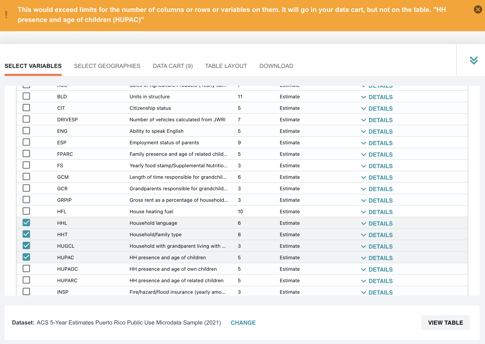

import pyarrow as pa
from pyarrow import parquet
import pyarrow.dataset as dsPart 2 – Data Import And CSV To Parquet Conversion
This the website for the workshop “Larger Than Memory Data Workflows with Apache Arrow and Ibis” taught at the J on The Beach conference on May 10th, 2023.
Learning objectives
- Read in data using Apache Arrow
- Convert data from CSV to Parquet
- Compare CSV file size to Parquet file size
Accessing the Data
The PUMS Dataset
The U.S. Census provides the PUMS data in several ways. You can browse the data right on their website. But after selecting 10 variables (out of 522) we are met with a throttle limit on how much data we can select at a time.

Luckily for us, census.gov also provides data via their FTP server. We’ll be using the five-year data from 2020, found here.
We may have already downloaded the data for you, check with your instructor! If this is the case skip to this section.
Downloading the Data
You can download the data in CSV format using this FTP URL: ftp://ftp.census.gov/programs-surveys/acs/data/pums/2020/5-Year/. To do this use your preferred tool, such as wget or aria2.
As an example, here’s how to download the data using wget on a Mac. Run the following lines in your terminal, to retrieve and then unzip the data:
# use wget or your ftp retrieval method of choice
wget --recursive -w 2 -nc --level=1 --no-parent --no-directories \
--accept 'csv*' --reject '*pus*' --reject '*hus*' \
--directory-prefix=. \
ftp://ftp.census.gov/programs-surveys/acs/data/pums/2020/5-Year/
# unizp the files, feel free to use your method of choice
unzip *.zipThe PUMS dataset is divided into data about people and data about households. After unzipping the files, we’ll divide the five-year set into person-focused and housing-focused data.
Person data can be identified by the naming pattern psam_p*.csv, while housing data has the pattern psam_h*.csv. From there, you can just use globbing to move them where you want them — the example below will work on Mac and Linux.
mkdir housing
mkdir people
mv psam_h*.csv ./household/
mv psam_p*.csv ./people/Examining the Data
Once this is done, you should now have two directories full of CSV data that make up approximately 14.13 GB.
Activity
- Check the size of the two directories on your machine, are they also 14GB?
14 GB is far too big for a desktop environment, you will run out of RAM working with this data. Additionally, there are too many files in each directory to wrangle efficiently.
In our workshop today we’ll convert the CSV files into two Parquet files: one for the household data, and one for person data. This will compress the data down to 4 GB! The Python Library PyArrow is well suited for this task.
Introduction to Apache Arrow
[In this section we need more info about Arrow and Parquet]
Before we move further here are a few things to know about Arrow:
- It is a columnar data-format and a standard.
- It can be used to convert one format to another
- Many programming languages have their own library to work with Arrow. We are using
PyArrowtoday, but others exist for C++, Go, R, Rust, etc.
Let’s import PyArrow and the specific methods we need:
Now, we need a view of the data — we’ll use PyArrow’s dataset functionality to do this.
A view does not read any data into memory.
# This line takes all the csvs files in the folder and adds them to the
# same dataset.
people_dataset = ds.dataset("./people", format="csv")
house_dataset = ds.dataset("./household", format="csv")Contrary to CSV files, arrow datasets are typed. When using the default options, the data types are inferred by reading a subset of the data to guess the types. However, with large datasets, it can happen that a variable is detected as being numeric when it contains strings outside the range used to infer the data type.
To handle this, we will redefine the schema and make a new view. This is a cheap operation because we haven’t read any data yet, only set up a view that’s aware of the files.
# Adjust the person data schema
people_schema = people_dataset.schema.set(1, pa.field("SERIALNO", pa.string()))
people_schema = people_schema.set(75, pa.field("WKWN", pa.string()))
# Adjust the household data schema
house_schema = house_dataset.schema.set(1, pa.field("SERIALNO", pa.string()))
#Update views with new schemas
people_dataset = ds.dataset('./people', format="csv", schema=people_schema)
house_dataset = ds.dataset('./household', format="csv", schema=house_schema)Now, we write to Parquet. This can take a while, as it’s only now that PyArrow fully reads the data.
ds.write_dataset(house_dataset, "pums_household", format="parquet")
ds.write_dataset(people_dataset, "pums_people", format="parquet")The Results
What gains do we get from this?
CSV to Parquet file size changes:
- Person Data: 10 GB –> 3.3GB
- Household Data: 4 GB –> 1.3 GB
That’s a 3X reduction for both of these in a few lines of code!
Parquet compresses data, but unlike zip files, it’s format allows data to be read directly in that compressed form.
In the next part of the tutorial we’ll be using Ibis to read in our newly made parquet files and analyze the data to draw insights from it!